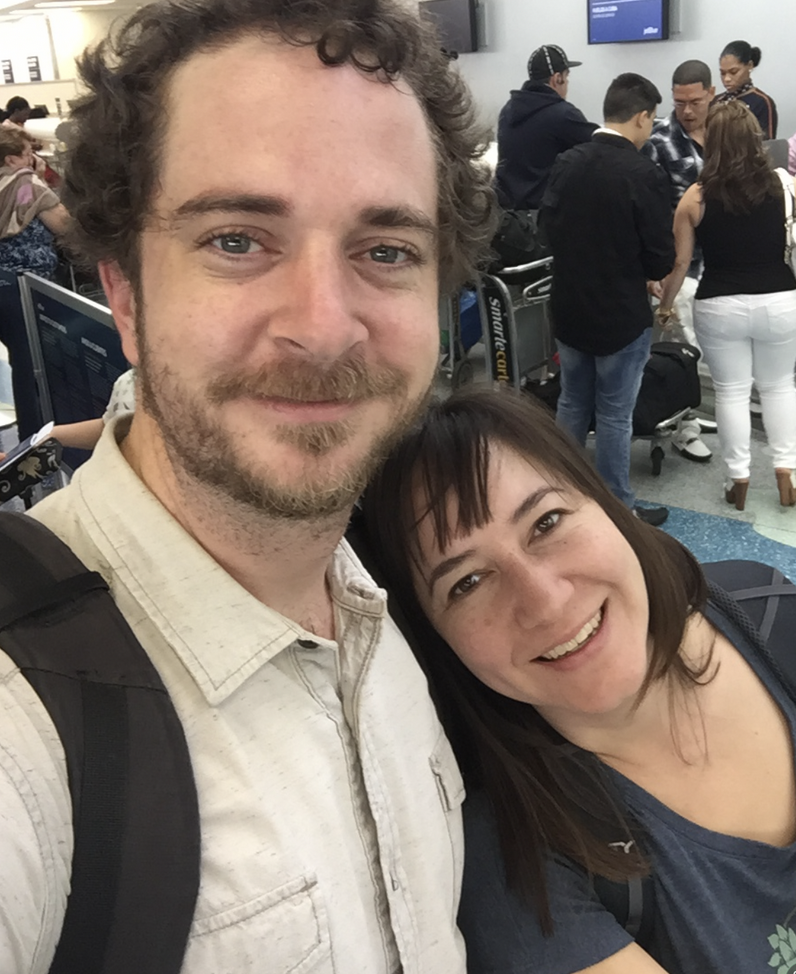

2016
We met online and in person and the sand blew us from the beach to the park and the bar and finally to your house, where I somehow missed my train..

a decade of us
2 0 1 6 — 2 0 2 6
We met online and in person and the sand blew us from the beach to the park and the bar and finally to your house, where I somehow missed my train..
We camped and explored California's beauty and biked around Trump protests in Portland, unbeknownst to us that we'd raise a child here. We also expanded our little family of two into three, by adding a small psycho
We left the big city and moved across the bay, continued our hikes and started the long road of adding ‘trying’ to add another family member.
Our little family grew by 1, a tiny and hopelessly adorable combination of you and I
We briefly expanded our little family by 5 and then .. chickened out. Explored Portland once again as the world socially distanced
We made the migration to the great Pacific Northwest and bought a house that was orange, inside and out.
Expanding our outdoors exploration to the Northwest, we did what all Portlanders do, hunt waterfalls! Also, I broke my leg.

We packed more and more into the 4Runner, and you learned how to cut bangs. We started making ‘friends with kids’

We were cold. We were warm. Sierra performed in dubious dress.
New beaches, new countries, Sierra started school!

And here we are; 10 years into making families, memories, house upgrades, stories, bread, sauna. It’s been awesome making this life with you; thank you for giving me all this!